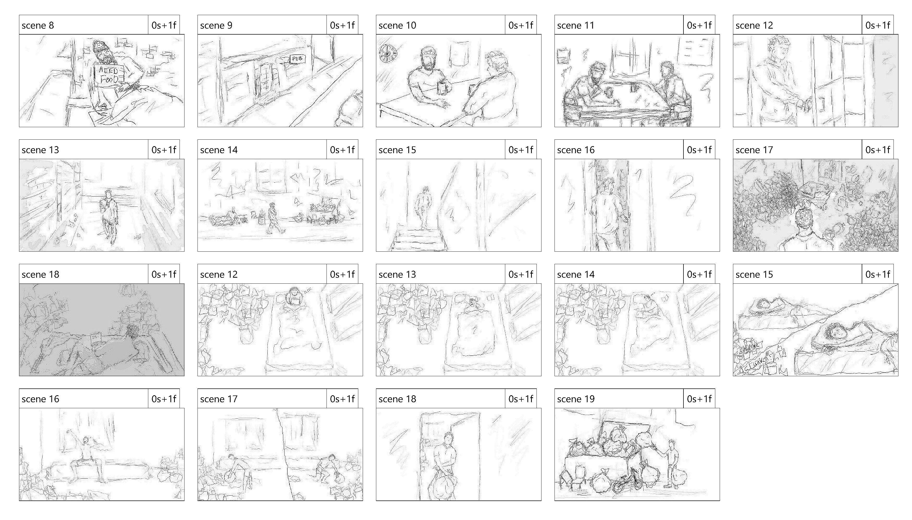

Selected work



I draw what I feel. My style is always changing, my interests wax and wane, but the constant that remains, is my unending love for art. My only hope is that my art can be enough to sustain me, as it is truly all I have.
"The specialized mind is a narrow mind... To understand life is to understand yourself, and that is not a matter of specialization."– Jiddu Krishnamurti

Mira Kellner works between painting and clay, mostly from a converted garage in Alcântara that gets four hours of usable light a day.
The paintings begin outdoors as small gouache notes and finish in the studio months later, by which point the place has become something else. Recent work has narrowed to a single stretch of estuary — the same water, painted enough times that the differences start to matter.
Trained at the Slade. Represented by Galeria Ponte, Lisbon.
Studio visits by appointment. Available work list on request.
studio@mirakellner.com